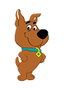
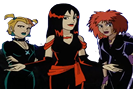
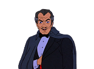
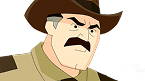

Scraapy-Doo
O sobrinho corajoso e hiperativo de Scooby-Doo que adora enfrentar os monstros cara a cara gritando "Poder Canino!".
Marcie Fleach
A inteligente rival de Velma em Crystal Cove que usa óculos e mais tarde se torna uma importante aliada da equipe.

Hex Girls
A famosa banda de eco-goth rock que usa um visual sombrio e ajuda a gangue a desvendar mistérios em vários episódios e filmes.

Vincent Van Ghoul
Um excêntrico perito no oculto e feiticeiro que orienta o grupo no combate a ameaças sobrenaturais reais.

Xerife Bronson Stone
O orgulhoso e teimoso xerife de Crystal Cove que prefere manter as aparências a admitir que os adolescentes estão certos.